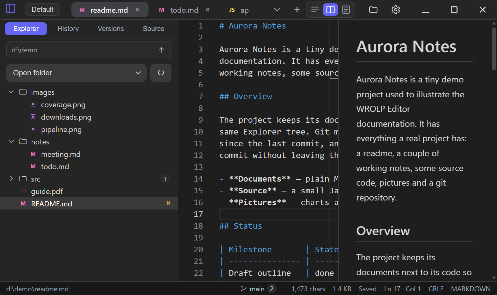

Overview
What WROLP Editor is, and what each module does.
Everything below comes from the project README and release notes, and tracks the release.
Keyboard shortcuts, tab groups, window state and interface language.
PDFs & picturesPDF paper, bookmarks and auto-scroll, plus the four views of the folder gallery.
Working with filesBatch rename, configuration backup snapshots and read-only side-by-side comparison.
Version historyPer-file private history: recording, comparing, restoring, and how it differs from git.
Source controlStaging, commits, branches, three-way merge, and fetch/pull/push over HTTPS or SSH.
Encrypted filesThe AES-256-GCM container, the three ways in, unlocking, the idle lock, passwords and drafts.
Where data livesEvery file under the configuration directory, and the Tauri commands the frontend calls.
DevelopmentRequirements, local development, building an installer, release gates and scripts.
Release notesFeatures, fixes and internal changes in v0.0.3, v0.0.2 and v0.0.1.
LicenseWROLP Editor is released under the MIT license.
A small local text editor for Windows.
Built on Tauri v2 + React + TypeScript, with Monaco Editor as the editing surface.
Feature overview#
| Area | Behaviour |
|---|---|
| Tabs | One window, many files; per-tab dirty marker, tab list dropdown, right-click menu on a tab with close all / close to the left / close to the right |
| Editing | Monaco: syntax highlighting by extension, minimap, multi-model per file, cursor restored per tab |
| Saving | Ctrl+S writes the file and clears its draft; a never-saved Untitled-N tab goes through Save As. Two cleanups are optional and off by default: trimming trailing whitespace, and adding a final line break a file is missing — both are applied to the buffer first, so the screen ends up showing the bytes written |
| Unsaved changes | Lines that differ from the file on disk are tinted — green where text was added, amber where saved text was replaced — and the marks clear on save. The workbench has this built in; the standalone editor needs the comparison, which is src/lib/dirtyDiff.ts |
| Line endings | Read from the file and written back as they are. One file can be forced to LF or CRLF from that tab's File settings, and a document with no breaks yet — a new file above all — takes what Settings → General names. The status bar shows the ending a save will write. A lone CR is not offered: Monaco's model joins lines with LF or CRLF and nothing else |
| Drafts | Debounced ~500 ms after each edit; also flushed on tab switch, tab close and window blur |
| Auto-save | Off by default. On, the file on screen is written once it has gone N seconds without an edit — typing restarts that file's countdown, so the write lands on a pause rather than mid-sentence. A tab you are not looking at neither starts a countdown nor loses one already running, and its unsaved text stays held by its draft. Untitled buffers, locked files, pictures, and anything the disk check already has a question about are left alone. Its writes record no version unless Settings → Versions says otherwise |
| Restore | On open, disk content is compared with the draft; a differing draft is loaded back and the tab stays marked unsaved. Settings can switch this to a per-file Restore / Discard dialog |
| Sidebar | Explorer file tree (lazy folders, refresh button, folders first and names in natural order — 2.txt before 10.txt), a History list of recently opened files, a Versions view, and a Source Control view. Drag the divider to resize (180–640 px, double-click resets); the width is persisted. The tree's text size is a setting, 11–20 px |
| Markdown preview | A .md tab renders beside its source: GitHub-flavoured markdown, a table of contents, code coloured by Monaco, mermaid / plantuml / graphviz fences drawn as SVG, and pictures that sit beside the document loaded through the asset protocol. What the document spells in HTML is rendered too, within an allow-list: the tags that mean something in a document, inline style filtered down to presentational properties, and no script, event handler, <style> block or id |
| PDF reading | A .pdf is drawn by pdf.js in place of the text editor: pages in one continuous column, fitted to the pane or at a typed size (25–400 %), on white, warm, green or night paper, or a colour of your own. The document's own bookmarks open in a column from a corner tab, on either edge (Settings → Preview), folding a branch at a time or the whole tree at once and jumping to the page a title names. Automatic scroll runs at a pace you set and stops on a wheel or a double click. The page you leave comes back per file |
| Picture gallery | A whole folder in one tab, in natural order (IMG_2 before IMG_10): stacked, one at a time, slideshow, or a grid. Subfolders are opt-in and walked four levels deep; one listing stops at 2,000 pictures and says so. Pictures are drawn through the asset protocol, so the editor's text-size limit does not apply. HEIC and TIFF are listed and marked as formats this renderer cannot draw |
| Batch rename | Multi-select rows or rename a whole folder at once; one pattern ({name}, {ext}, {n}) or a regular expression with a replacement, a live preview, and an order — name, extension, modified time or manual — that {n} counts. See Batch rename |
| Version history | Off by default. On, every save by hand records what the file said, and any two of them — a version against a version, or either against what is open — can be compared side by side, folded down to the changes, or put back into the editor. One file's saves can be excluded, or forced in, from its tab menu. See Version history |
| Source control | Explorer rows carry their git letter — a dimmed ! for paths git ignores, with the row and its icon stepped back — and folders the count of changes beneath them. A fourth sidebar view for the real repositories behind the group's folder — found in subdirectories up to a configurable depth, added by hand, or cloned into it — with staged and unstaged changes, per-file diffs, stage / unstage / discard, commits with history, branches, conflict resolution including a three-pane merge editor. See Source control |
| Remotes | Fetch, pull (fast-forward or merge) and push over HTTPS or SSH, with progress and a Cancel button. Remote addresses can be added, edited and removed from the panel. Credentials live in state/git.json, never in Settings or its backups |
| Single instance | Launching a second time hands the path to the running window, adds a tab and focuses it |
| Settings | Context-menu switch, editor font size, minimap, UI language; persisted and applied live. The context-menu page also shows the command the entry currently launches, and warns when it points at a different build or when this is a debug build |
| Language | Follow the system by default — 中文 on a Chinese Windows, English elsewhere — and either language can be fixed from a dropdown in Settings. All strings, including messages coming from the Rust side, resolve through one key table |
| Updates | Settings → About checks the latest GitHub release on request, and the app also checks after startup and every six hours, announcing a new version without installing it. Installing downloads the signed NSIS package and hands it to the passive installer, which restarts the app. The automatic check can be turned off in Settings → About |
| Tab groups | A group is a named set of open tabs plus the folder the Explorer shows. The chip in the title bar switches between them inside the same window — tabs, caret positions and the tree come back with it |
| Move / copy tabs | A tab can be re-homed into another group from its context menu. This changes which group lists the tab, never the file on disk |
| Configuration backups | Timestamped snapshots of groups, settings, recent files and folder history, refreshed when the app opens and closes and on demand; older ones are pruned to a count you set, and any snapshot can be restored from Settings → Backups. Drafts and version history are not included |
| Comparison | A read-only side-by-side diff of any two contents. Either side may be a file on disk or an unsaved buffer (an untitled tab included); a file against its own unsaved text has an entry of its own, and re-running a comparison refreshes its snapshot. One comparison tab by default, switchable to a new tab per comparison. Unchanged stretches collapse into a numbered row that opens again, and a narrow pane falls back to one column — the header has a switch between split and unified view |
| Encrypted files | A self-describing AES-256-GCM container keyed from a password. Save as encrypted, new encrypted file, change password, remove encryption; an idle lock drops the keys; remembering a password in the Windows credential store is opt-in; drafts are sealed with the same key |
| Window | Size, position and the maximized flag come back on the next start. A window left on a monitor that is no longer connected is pulled back onto a screen you still have, and says so |
